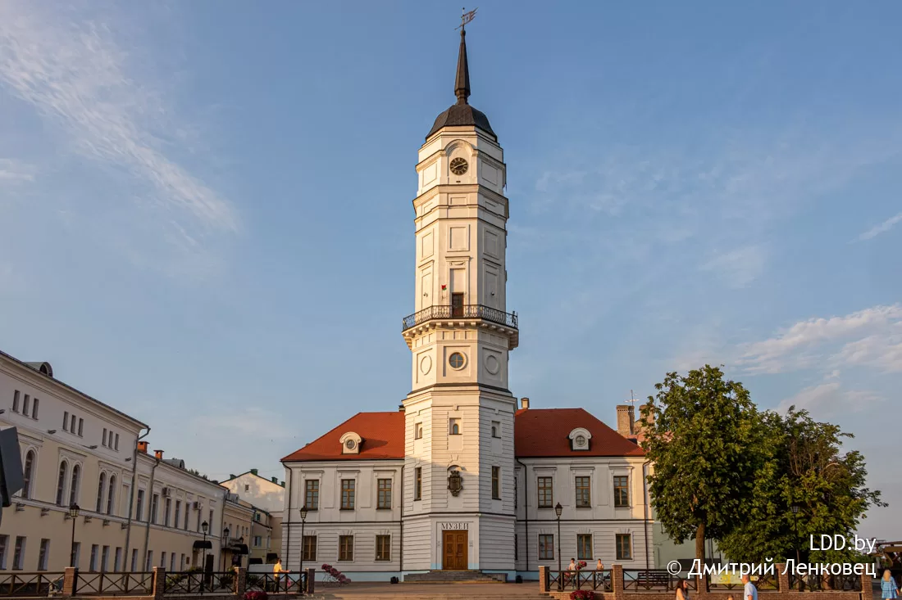
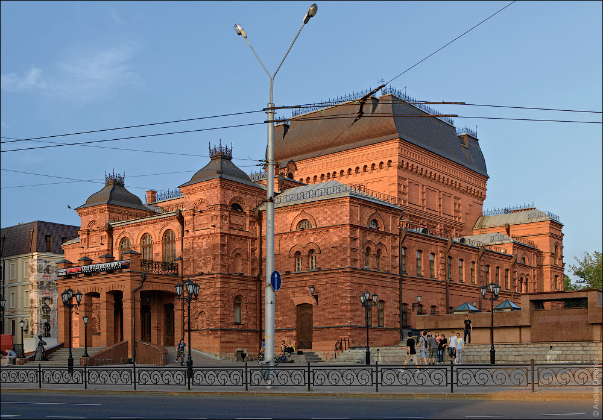
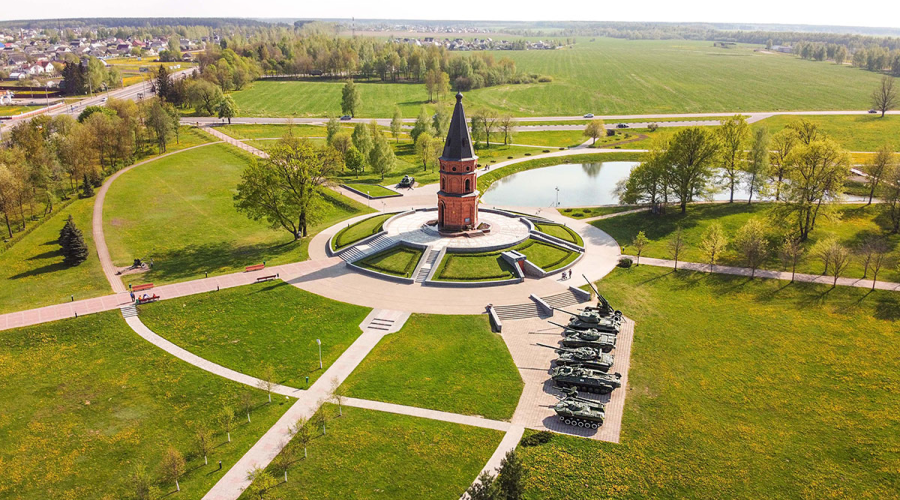

Могилев — Город на Днепре
1. История города
Могилев — один из древнейших городов Беларуси, впервые упомянутый в 1267 году. Город имеет богатую историю, связанную с Великим Княжеством Литовским, Речью Посполитой, Российской империей. В XVI-XVIII веках Могилев был важным торговым и ремесленным центром на пересечении путей между Востоком и Западом.
В 1577 году город получил Магдебургское право. В 1915-1917 годах здесь находилась Ставка Верховного главнокомандующего русской армии. Во время Великой Отечественной войны город был оккупирован и сильно пострадал. Сегодня Могилев — крупный промышленный и культурный центр восточной Беларуси.
2. Достопримечательности
-
Могилевская ратуша
Восстановленная в 2008 году городская ратуша — символ самоуправления и независимости города. Со смотровой площадки открывается прекрасный вид на исторический центр.

-
Свято-Никольский монастырь
Действующий православный монастырь XVII века с уникальным деревянным иконостасом, включенный в предварительный список Всемирного наследия ЮНЕСКО.

-
Площадь Звезд
Одна из самых красивых площадей города с оригинальной архитектурой, скульптурой звездочета и первой в Беларуси солнечными часами.

-
Могилевский драматический театр
Один из старейших театров Беларуси, основанный в 1888 году. Здание театра — памятник архитектуры XIX века.

-
Буйничское поле
Мемориальный комплекс на месте героической обороны Могилева в 1941 году. Здесь же находится этнографическая деревня и зоосад.

3. Символы города
Герб Могилева был утвержден в 2005 году и представляет собой французский щит, в голубом поле которого изображены три серебряные башни с открытыми воротами. На центральной башне — золотой рыцарь с мечом и щитом. Герб символизирует историческое прошлое города как крепости на восточных рубежах.

4. Расположение на карте
Могилев расположен на востоке Беларуси на берегу реки Днепр, в 200 км от Минска. Город является административным центром Могилевской области и важным транспортным узлом на пересечении автомобильных и железнодорожных путей.
6. Город сегодня
Сегодня Могилев — третий по величине город Беларуси с населением около 357 тысяч человек. Крупный промышленный центр (химическая, машиностроительная, пищевая промышленность). Важный образовательный и культурный центр региона. Город активно развивается, сохраняя при этом свое историческое наследие и уникальную атмосферу.